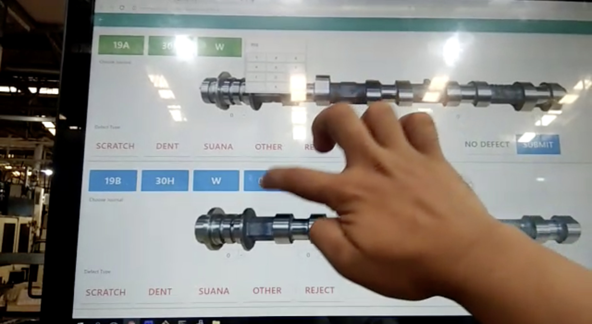
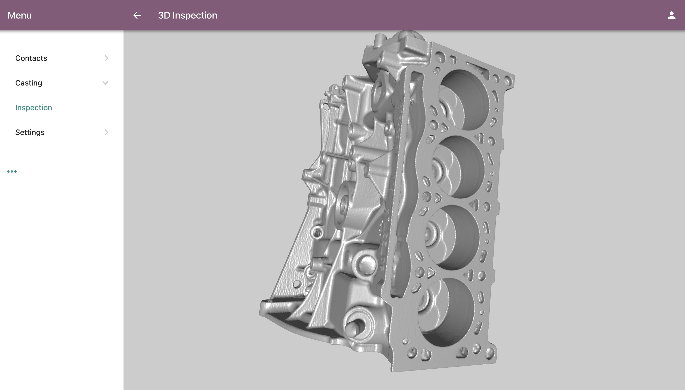

We design the software architecture of Solu to always met our client's requirements with just the exact solution for their needs.
Solu has been implemented in various specific fields such as IoT, AGV-equipped WMS (Automated Guided Vehicles), Manufacturing Traceability and Inspection, and ERP.
IoT

Over the past years we have been automating some of manufacturing sections that are able to be replaced by software and robots.
The true solution lies somewhere between perfection and availability. Keep the established legacy technologies to its respective places while we interface the crucial data to be visualized with modern techniques.
In this another era of Industrial Revolution clients are forced to choose the most versatile tool for their problems. And with Solu's use of the latest Web and Javascript technologies it enables it to run anything, anywhere.
Technologies
We choose Solu's underlying technologies with the best option out there. Solu uses RPython, a restricted subset of Python that is amenable to static analysis (static compilation). We also fork RPython to be able to compile to WebAssembly, so it can be run on everywhere possible.
We also use powerful Javascript libraries for our projects. With the Javascript ecosystem, we can build any kind of software ranging from Ecommerce, CRM and PoS Systems to more complex one like Robot Aided Manufacturing Inspection, and AGV Warehouse Routing systems.
Performance
Solu is crafted with decentralization in mind. We always opt-in for decentralized infrastructure whenever we can. Although with PouchDB's Abstraction Layer it doesn't matter whether our client asks to use centralized/decentralized database, or even a relational/non-relational database. It is also possible to use Solu as a series of Microservices.
class StockMove(models.Model):
_name = 'stock.move'
#Some code...
@asynchronous
def create_move(self, order_line_ids):
location_id, move_ids =
self.env['stock.location'].browse(self.env.context.get('active_location_id', None)).wait(),
self.create(Object.fromList([JSON.fromDict({'product_id': order_line_id.product_id, 'product_qty': JSON.fromFloat(order_line_id.product_qty), 'uom_id': order_line_id.uom_id, 'partner_ids': JSON.fromList(order_line_id.partner_ids)}) for order_line_id in order_line_ids])).wait()
if not location_id:
raise exceptions.ValidationError("You haven't set the active location for this transaction")
move_ids.confirm_move(location_id).wait()
The builtin ORM of Solu is also created with that in mind. We provide an extremely easy asynchronous ORM API that performs blazing fast, especially in a decentralized environment. Because of our static code compilation, we can detect most of development errors leaving the software without bugs except for runtime errors. And in case of unovaidable runtime errors (like out of memory, out of storage, network down, and etc) we also provide developers to be able to handle the error gracefully (such as cancelling a cancellable transaction or reverting data).
Our work
- Solu (the framework itself)
- Pyrex (React bindings in RPython)
- RPython (our fork of RPython)
- RapydScript Plugin (internal RapydScript plugin to code on React Native)